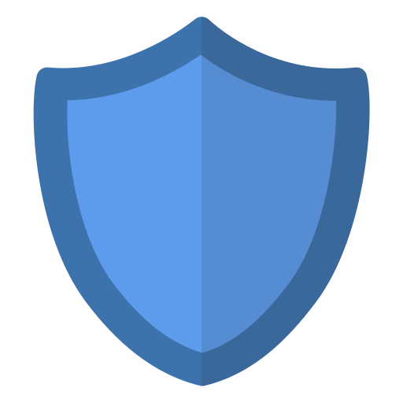

Goal 2 / Demonstrate foundational skills in Cybersecurity
Being an increasingly important aspect of the computing industry, as the growing number of vulnerabilities can expose systems, networks, and sensitive information to potential threats, developing my understanding of cybersecurity is key. Although my prior coursework has introduced me to a foundational understanding of cybersecurity, including Unix systems and network protocols, I recognise the need to further develop and deepen my understanding of the area, as understanding how these systems operate does not necessarily translate to understanding how they can be exploited or protected.
To build upon this existing foundation, I committed myself to:
These activities were intended to develop my awareness of cybersecurity threats, vulnerabilities, and preventative measures, building upon my foundational knowledge and allowing me to better understand the field of cybersecurity.
Sigh. Maybe I should know what I want to do more by now